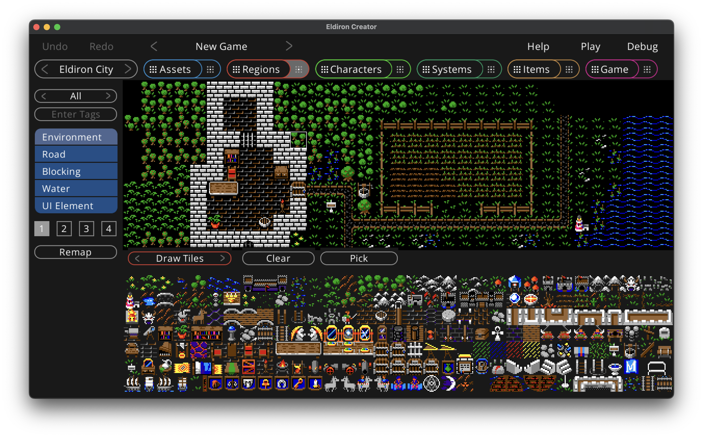

Drawing Tiles

In the bottom of the view you have the tile selector. The tiles being shown depend on the currently selected valid usage role, which is one of Environment, Road, Blocking, Water and UI Element.
You can filter which tiles do show by:
- Cycling throw the tile-maps using the button at the top of the left sidebar (All shows the tiles of all tile-maps which is the default).
- Entering a tag, for example door, would only show tiles with a door tag.
While drawing you can select which layer to draw on, Eldiron supports 4 layers of transparency, with layer one having the lowest transparency level and four the highest.
The Remap buttons remaps all tiles in the region. This is necessary because the usage role of the tile is saved in the region itself. If you change the role of a tile in the assets view, for example from an environment tile to a blocking tile, you need to remap the region to update the role of the tile.
While the the Clear button is checked Eldiron clears the clicked tile instead of drawing on it. The Pick button selects the tile at the currently clicked location so you can use it for drawing. The cleanr pick buttons of keyboard shortcuts of C and P.